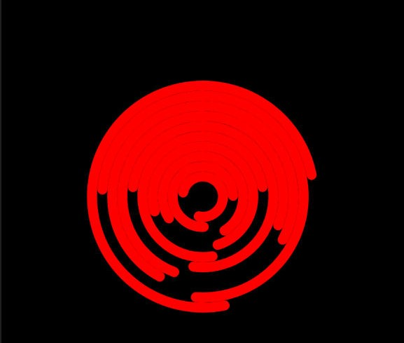
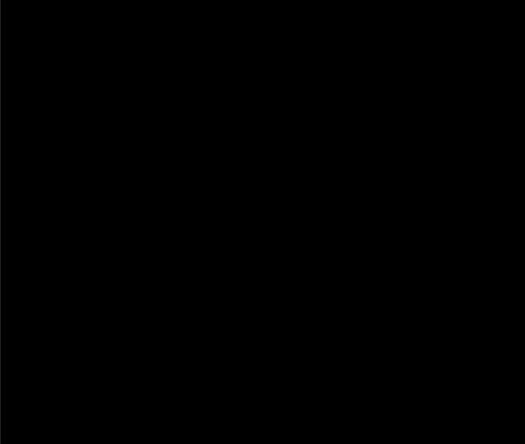
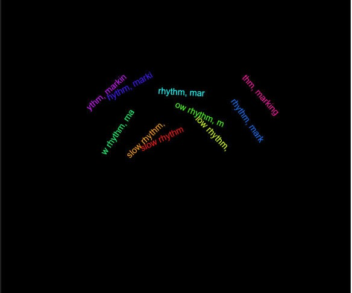
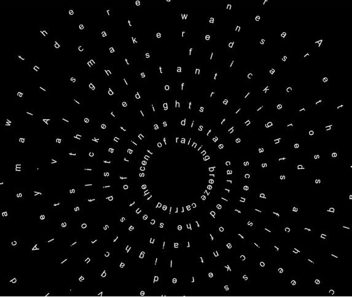

1.add the trigonometric function to make the circules move randomly concentrically.

2.add a function to make the color become different.

3.I want to make the color become some words, but when i change the function draw through set a "let myText = " myText". it showed an error, the display became black.

4.change the function preload and the for loop function.

5.Add a for loop for the Text section. Make the color of words is white.

6.Change the color of words becoming colorful by using the for loop function.